Content from Git Basics and Single-Person Workflow
Last updated on 2026-03-12 | Edit this page
Overview
Questions
- What is version control and why should I use it?
- What are the basic git concepts I need to know?
- How do I work with a repository on my own?
Objectives
- Explain what git is and why version control matters
- Describe the difference between local and remote repositories
- Perform the core loop: edit → commit → push → pull
- Write meaningful commit messages
- Use a
.gitignorefile to exclude unwanted files
Why bother with version control?
This section was taken from Software Carpentry: Version Control with Git. by I. Gonzalez, D. Huang, N. Hejazi and K. Koziar (Version 04.03.2026) and slightly adapted.
We’ll start by exploring how version control can be used to keep track of what one person did and when. Even if you aren’t collaborating with other people, automated version control is much better than this situation:

We’ve all been in this situation before: it seems unnecessary to have multiple nearly-identical versions of the same document. Some word processors let us deal with this a little better, such as Microsoft Word’s Track Changes, Google Docs’ version history, or LibreOffice’s Recording and Displaying Changes.
Version control systems start with a base version of the document and then record changes you make each step of the way. You can think of it as a recording of your progress: you can rewind to start at the base document and play back each change you made, eventually arriving at your more recent version.
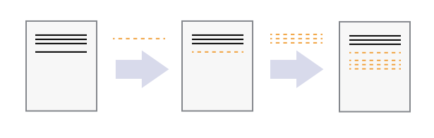
Once you think of changes as separate from the document itself, you can then think about “playing back” different sets of changes on the base document, ultimately resulting in different versions of that document. For example, two users can make independent sets of changes on the same document.
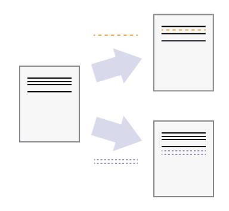
Unless multiple users make changes to the same section (i.e. text row) of the document - which would cause a conflict - versioning systems can automatically incorporate sets of non-conflicting changes into the same base document.
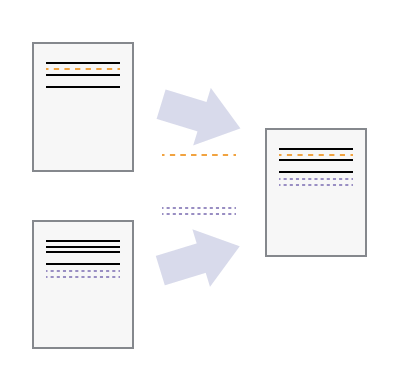
And this is where git comes into the game!
What Is Git?
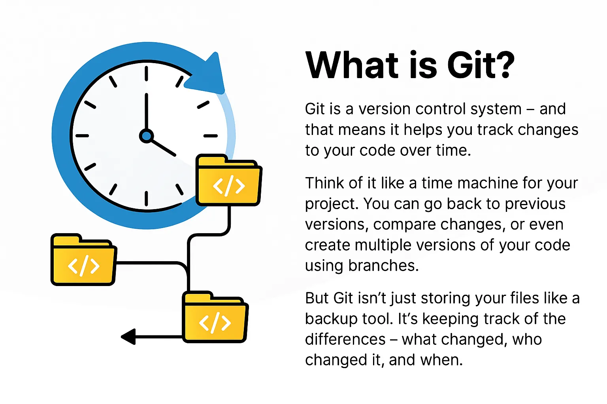
is a version control system — a tool that tracks changes to your files over time. Think of it as an “undo history” on steroids: you can go back to any previous version, see exactly what changed, and even work on multiple versions in parallel.
The following screenshot shows a git commit history with messages and timestamps. Each commit is a snapshot of the project at a point in time, allowing you to track the evolution of your work and understand the context of changes.
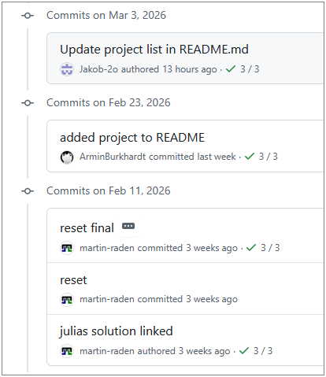
An important aspect of git is that it is managing not single files but entire repositories (or “repos” for short). A repository is eventually a directory that contain all your project files, subdirectories, and the complete history of changes therein. Thus, version control with git is not just about tracking changes to individual files, but about managing the entire project as a cohesive unit.
Given this, the first step in using git is to think in terms of projects rather than individual files. A project can be anything from a collection of scripts, data, and documentation for a research study, to a website, to a software application. All the files that belong to the project should be organised within a single repository, which git will then manage as a whole.
Why use version control?
- Reproducibility: every version of your work is saved and can be restored.
- Collaboration: multiple people can work on the same project without annihilating each other’s changes.
- Publishing: share your work publicly or with a team.
- Archiving: keep a permanent, citable record of your project.
What Is GitHub?
is a web platform that hosts git repositories online. It adds collaboration features such as pull requests, issues, and project boards on top of git’s version control. So GitHub is not git itself, but a service that uses git to manage repositories in the cloud. Its collaborative features bring git’s power to the next level, making it easier for teams to work together on projects and for individuals to share their work with the world.
- Git = the version control engine (runs on your computer).
- GitHub = the hosting service (stores your repository in the cloud).
Local vs Remote Repositories
Before we start working with git, it’s important to understand the difference between the local and remote repositories:
| Term | Meaning |
|---|---|
| Local repository | The copy of the project on your computer |
| Remote repository | The copy hosted on GitHub (often called origin) |
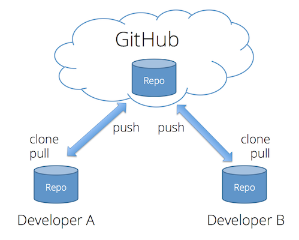
When you clone a repository, you download the remote copy of the project to your machine. From that point on, you will synchronise changes between the two copies using push (local → remote) and pull (remote → local) git actions. The same can be done by multiple people working on the same project, allowing for collaboration based on a synchronised central remote repository. This is one of the major advantages of using systems like git for file management.
Creating a Repository
To start using git, you need to create a repository for your project. This can be done in several ways.
Starting in GitHub
One way to start a project is to directly create a new repository on GitHub. This is useful if you want to start with a clean slate and have your project hosted online from the beginning.
To this end, you can go and log-in to GitHub, click on the “New” button in the repositories section, and follow the prompts to set up your repository.
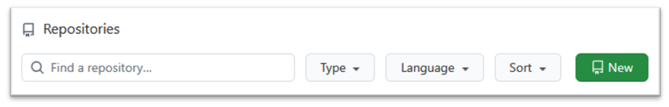
In the subsequent form, you can
- choose a name for your repository (without blanks or special characters),
- add an optional description, and
- select the visibility (public or private).
The latter depends on whether you want to share your project with the world (public) or keep it private (private) and can be changed later on if needed.
Note: We recommend to start with a README file,
i.e. you can check the box “Add a README file” in the form.
This will create a README.md file in your repository with
some default content that you can edit later on. Documenting your
project (folders) with README files is a good practice as
it provides an introduction and overview of your project or respective
information for others (and for yourself in the future).
After creating the repository in GitHub, you can start working on it via the GitHub web interface. But to have the full power of git and to work with your files on your computer, you need to clone the repository to your local machine, which can be done using GitHub Desktop, an IDE or the command line as discussed later.
Starting locally using GitHub Desktop
Similarly, you can start by creating a local repository on your computer and then push it to GitHub later on.
To this end, you can open GitHub Desktop, click on “File” → “New
Repository”, and follow the prompts to set up your local repository. The
subsequent form also allows you to choose a name for your repository,
select a local path where it will be created, and optionally add a
README file etc.
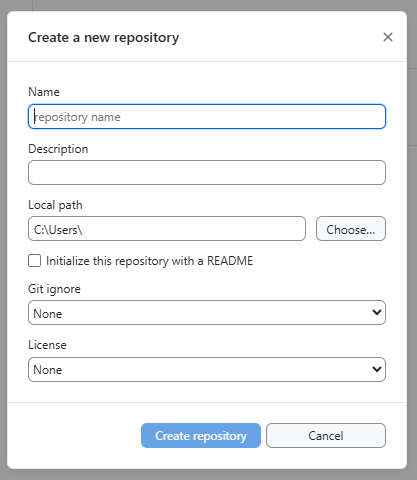
In contrast to the “GitHub online way”, this will create a local repository on your computer, but it will not be connected to GitHub yet. In order to connect it to GitHub, you need to click on “Publish repository” in the toolbar at the top of GitHub Desktop, which will upload your local repository to GitHub and create a remote copy there.
Taking care of existing local git repositories with GitHub Desktop
If you are already using git on your computer and have existing repositories, you can also add them to GitHub Desktop to manage them with the GUI. To this end, you can click on “File” → “Add Local Repository” and select the folder of your existing repository.
This is possible, since the whole information of the local repository
is stored within a hidden .git folder within the project
directory. The stored information is independent from the tool you used
to create the repository, so GitHub Desktop can read and manage any
repository created with any tool as long as it is a valid git repository
(i.e. it has a .git folder with the necessary
information).
Moving repositories
Since the whole local repository information is stored within the
.git folder and is related to the “inner layout” of your
project folder, you can move the project folder around on your computer
without affecting the repository information, as long as you keep the
.git folder intact within the project directory.
The Core Loop
Now that you have a repository set up, you can start working with it.
On the surface, your project directory doesn’t look different from any other folder on your computer, but it is now under version control with git. That is, it is now a working directory that is connected to a local repository (and potentially a remote repository on GitHub) and all changes you make to the files within this directory can be tracked and managed with git. The major difference is: you will find different things within the project directory dependent on the things you do with git. For instance, you can check the content of your project folder at different time points in your projects history… Cool, right?
Repository vs Working Directory
Note: the local repository is kind
of a local database of all the changes you make on all the files in your
project. It is stored within a hidden .git folder in your
project and controlled by git not the same as the files on your computer
that you edit and work with! In order to work with the files on your
computer, git treats the project’s directory as its working
directory that is a copy of the project files at a specific
point in time (and its respective commit). When you make changes to the
files, they are not automatically saved in the local repository until
you commit them. This is an important distinction to
understand as it allows you to control when and how your changes are
recorded in the history of the project.
In the end, the git workflow operates in three places:
- Working directory — where you edit files on your computer.
- Local repository — where your commits are stored on your computer.
- Remote repository — where your commits are stored on GitHub.
The interchange between these three places can be illustrated as follows by relating the git operations with a similar workflow without digital tools:
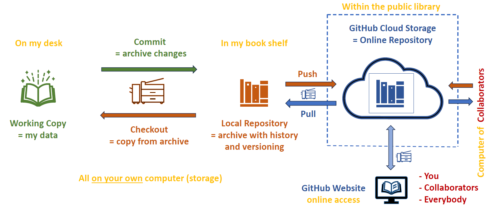
Therefore, the everyday git workflow follows four steps:
- Pull — get the latest changes from the remote (GitHub) repository before you start working. Note, this also updates your working directory!
- Edit — change files in your working directory. This is done with any tool and independent of git.
- Stage - select which of your files/changes you want to include in the next commit. This is an optional step that allows you to control how your commits are structured.
- Commit — save a snapshot of your changes with a descriptive message in your local git repository.
- Push — upload your recent commits from the local to the remote repository (on GitHub).
We strongly recommend to start your daily work by pulling the latest changes from GitHub to ensure you are working with the most up-to-date version of the project and to minimise potential conflicts later on.
Staging
Coming back to staging (step 2 in the list above). By
default, git will not automatically do version control for any of your
files. That is, you have to explicitly tell git which files and
changes you want to include into the repository! In git
nomenclature, this is called staging a file for commit and is
done with the git add command in the CLI or by checking the
files in GitHub Desktop or your IDE.
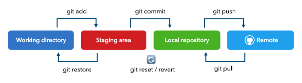
The same holds for all changes you make to files that are already under version control: you have to stage the changes before they are included in the next commit. This allows you to control how your commits are structured and to create small, focused commits that are easier to understand and review than large, monolithic commits. Also you can “store” only some of your changes in a commit and keep the rest for later commits, which can be useful if you are working on multiple features or changes at the same time.
The Core Loop in GitHub Desktop
So far you have seen how the git workflow operates in theory, but how do you actually do these steps in practice?
Eventually, git is a command-line tool and thus all operations are done within a command-line interface (CLI) such as Terminal or (Git) Bash. This looks like this:
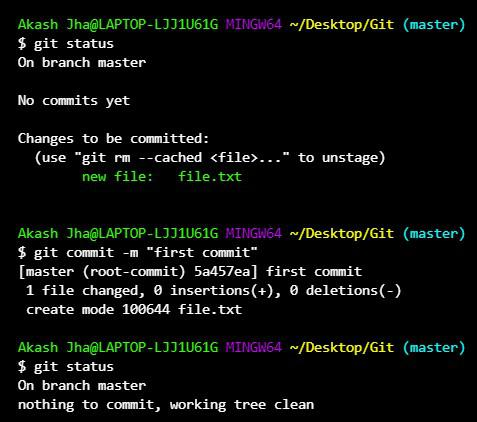
This is very efficient and useful when your are already comfortable with the CLI, but it can be intimidating for beginners. Therefore, we will use GitHub Desktop, a graphical user interface (GUI) that allows you to perform git operations without typing commands. The core loop of edit → stage → commit → push → pull can be done entirely within GitHub Desktop, which is more user-friendly for those new to git. The Screenshot shows the GitHub Desktop interface for a repository with some changes to be staged for commit.
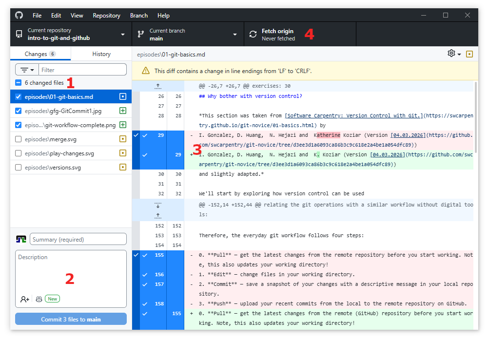
(1) Staging Changes
Within the screenshot from above, you find in the upper left corner (highlighted by the red (1)) the Changes tab, which lists all the files that have been modified in your working directory since the last commit. To stage a file for commit, simply check the box next to it.
The symbol on the right of the file name indicates the type of change:
- a green plus means the file is new,
- yellow dots indicate modified files, and
- a red minus identifies a file that was deleted.
(2) Reviewing Changes
You can also click on modified file names to see a visualization of the changes you made, which is highlighted by the red (2). Therein, added lines are in green and removed lines in red.
Note, since git works line by line, if you change a line, git will show the old version as removed and the new version as added, even if they are very similar. In that case, detailed changes are highlighted in dark hue within the added and removed lines to show exactly what was changed, as shown in the example of the modified file in the screenshot above.
It is recommended to always review your changes before staging and committing to ensure you are including the intended modifications and to catch any unintended changes.
(3) Committing staged changes
Once you have selected (staged) all files, you are ready to commit to your local repository. This is done by writing a short, descriptive Summary (commit message) in the box at the bottom left (highlighted by the red (2)) and then clicking the Commit to main button. The commit button itself shows the number of staged files for this commit as a final reminder of what you are about to commit.
Longer descriptions can be added in the box below the Summary, but it is recommended to keep the Summary concise and to the point, while using the description for more detailed explanations if necessary.
Once you click the commit button, the changes are saved in your local repository, along with your “commitment”, i.e. your user information, time stamp, commit message, etc.
(4) Pushing Changes
After committing, your changes are still only in your local repository on your computer. To share them with others or to have them available on GitHub, you need to push them to the remote repository.
This is done using the “remote” section in the toolbar at the top of GitHub Desktop, which is highlighted by the red (4) in the screenshot above.
There, you can
-
Fetch origin to check if there are new commits on
GitHub that you don’t have locally yet (for example, if you made changes
on GitHub via the web editor or if someone else pushed changes to the
same repository).
- Note: this does not change your local files within the working directory, it just checks for updates and shows you if there are new commits available on GitHub.
-
Pull origin to fetch and merge those changes into
your local repository and update your working directory with the latest
version from GitHub.
- Note: this has the potential to cause merge conflicts if there are changes on GitHub that conflict with your local changes, so it is recommended to pull before you start working to minimise this risk.
-
Push origin to upload your local commits to GitHub
so they are available in the remote repository and can be seen by
others.
- Note: you can only push commits that are already in your local repository, so you need to commit before you can push.
Most programming IDEs (including RStudio) have built-in git support that allows you to perform the core workflow without leaving the IDE. In RStudio, you can find the git pane in the upper right corner, which shows you the status of your files (modified, new, deleted) and allows you to stage, commit, and push changes to GitHub.
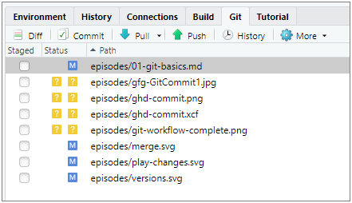
When you click on “Commit”, a new window opens where you can review your changes, write a commit message, and commit to your local repository similar to the workflow described for GitHub Desktop. After committing, you can push your changes to GitHub using the “Push” button either in the commit dialog or in the git pane.
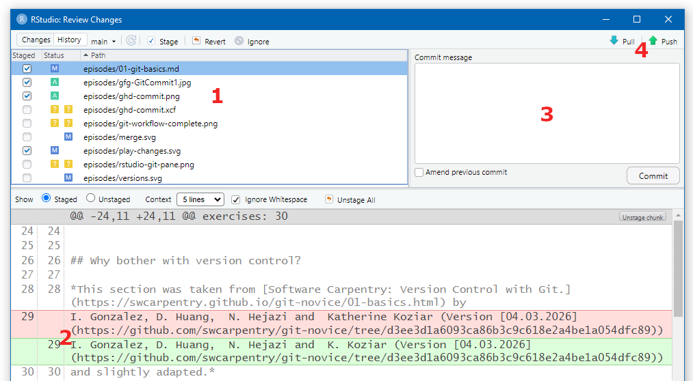
BASH
# Clone a repository
git clone https://github.com/USERNAME/REPO.git
# Check what has changed
git status
# Stage changes for commit
git add filename.md # stage a specific file
git add . # stage all changes and new files
# Commit with a message
git commit -m "Add goals section to README"
# Push commits to GitHub
git push
# Pull changes from GitHub
git pullTracking Changes and History
Every commit is a snapshot in your project’s timeline. You can browse the history to see:
- what changed (which files, which lines),
- when it changed (date and time),
- who made the change, and
- why (the commit message).
Viewing History online in GitHub
Navigate to your repository on GitHub.
-
Within the Code view, click the Commits link above the file list.
- This shows the list of all commits within the repository, with their messages, authors, and timestamps.
{kind=link}
- When selecting a single file, you can also click the
History button in the top right corner.
- This shows the commit history for that specific file, allowing you to see how it evolved over time and who made changes to it.
{kind=link}
Both views allow you to click on individual commits to see the exact changes made in that commit.
Viewing History in GitHub Desktop
- Click the History tab in the left panel.
- Select any commit to see the files that were changed by this commit.
- Click on a changed file to see the diff of what was added (in green) and removed (in red) on the right
{kind=link}
Similar views are also available in RStudio and other IDEs with git support, allowing you to browse the commit history and see diffs of changes directly within your coding environment.
{kind=link}
What Makes a Good Commit?
Best practices for commits
- Small and focused: each commit should represent one logical change.
- Clear message: start with a short summary (≤ 50 characters), optionally followed by a blank line and more detail.
- Commit often: frequent small commits are easier to understand and undo than rare large ones.
Good examples:
Add project goals to READMEFix typo in introduction section
Bad examples:
Update filesabc
Ignoring Files with .gitignore
Not every file belongs in a repository. Build outputs, temporary files, and credentials should be excluded.
Thus, such files should never be considered for staging and committing.
In order to avoid accidentally including unwanted files in your
commits, you can create a .gitignore file in the root of
your repository (or within respective subdirectories) that lists the
files to ignore. To reduce list length and to cope with files that are
generated with different names (e.g. file1.txt,
file2.txt, etc.), you can use standard wildcards patterns
to ignore multiple files at once.
The following shows a sample .gitignore file that
ignores compiled files, editor backups, OS files, and credentials:
# Compiled files
*.exe
*.o
# Editor backups
*~
*.swp
# OS files
.DS_Store
Thumbs.db
# Credentials — never commit these!
secrets.yaml
.envIgnore files via GitHub Desktop
In GitHub Desktop, ignoring files (and creating/updating a respective
.gitignore file) can be done by right-clicking on a file in
the Changes tab and selecting “Ignore this file” from the context menu.
This will automatically add the file name to a .gitignore
file in the root of your repository (or create one if it doesn’t exist
yet) and thus ignore it for future staging and committing
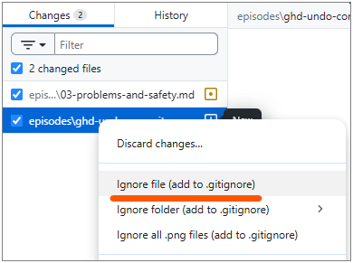
Note, the context menu also allows you to ignore all files with the
same extension by selecting “Ignore all .png files” (here to ignore all
PNG images), which is a convenient way to ignore multiple files at once
without having to edit the .gitignore file manually or the
need to explicitly ignore each file one by one.
Ignoring the folder (“Ignore folder” option) will add the folder name
to the .gitignore file with a trailing slash
(e.g. data/), which tells git to ignore all files within
that folder and its subfolders.
Fetch vs Pull
| Command | What it does |
|---|---|
| Fetch | Downloads new data from the remote but does not change your local files. |
| Pull | Fetches and merges the remote changes into your current branch. |
In GitHub Desktop, clicking Fetch origin checks for updates. If there are new commits, the button changes to Pull origin.
For more details, see Git fetch and merge.
Exercise: Explain in Your Own Words
Write one or two sentences explaining each of the following terms:
- Commit
- Push
- Pull
- Commit — a saved snapshot of changes in my project, together with a message describing what I changed and why.
- Push — uploading my local commits to the remote repository on GitHub so others (or other devices) can see them.
- Pull — downloading and merging commits from the remote repository into my local copy so I have the latest changes.
- Git is a version control system that tracks changes to files over time.
- GitHub hosts git repositories in the cloud and adds collaboration features.
- The core workflow is: pull → edit → commit → push.
- Good commits are small, focused, and have clear messages.
- Use
.gitignoreto keep unwanted files out of your repository.
Content from Collaboration, Branching and Pull Requests
Last updated on 2026-03-12 | Edit this page
Overview
Questions
- How can multiple people work on the same project without overwriting each other’s changes?
- What is a branch and why should I use one?
- What is a pull request?
Objectives
- Explain how concurrent changes are merged automatically
- Describe what a merge conflict is and when it occurs
- Create and switch between branches in GitHub Desktop
- Open a pull request on GitHub and request a review
Working Together on the Same Project
When you are not the sole contributor to a project, multiple people will be making changes to the remote directory. Thus, while you are working on your local copy, someone else might be changing the some files of the project on their local copy and pushing those changes to the remote repository. When you are done with your changes and committed them to your local copy, your local repository will be both outdated and ahead of the remote repository at the same time!
That is - the remote repository has changes that you don’t have (because someone else pushed them), and - your local repository has changes that the remote repository doesn’t have (because you haven’t pushed them yet).
Therefore, git will refuse to push your changes until you have integrated the remote changes into your local copy. When using GitHub Desktop, you will see the following notification.
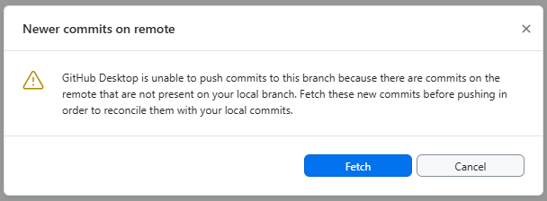
When pulling, git will try to automatically integrate the remote changes into your local repository. That is, all changes that are made to different files pose no problems. Problems can occur when two people edit the same file at the same time.
When the two people edit different parts of the same file, git can usually merge their changes automatically. This is called an auto-merge and works best with plain-text files (Markdown, code, CSV, XML, HTML, …).
Why text files merge well
Git tracks changes line by line. When two sets of changes touch different lines, git can combine them without ambiguity. Binary files (images, Word documents) cannot be merged this way — git will always flag them as conflicts and you must manually choose which version to keep.
So whenever possible, use text-based file formats for your files to take advantage of git’s powerful merging capabilities.
Merge Conflicts
In case the remote repository’s changes overlap with your local changes, git cannot automatically merge them. Thus, GitHub Desktop will show a notification that says “This branch has conflicts that must be resolved” as follows.
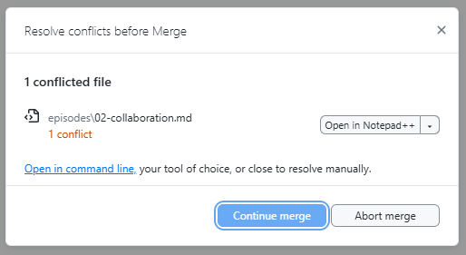
In that case, a so called merge conflict occurs.
A merge conflict happens when two people change the same line(s) of the same file. Git cannot decide which version to keep, so it asks you to choose.
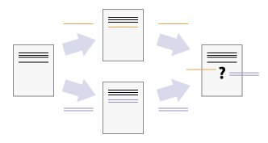
What a conflict looks like
The dialog from above allows you to use an external editor to resolve the conflict. This is possible because git marks the conflicting sections in the file with special markers.
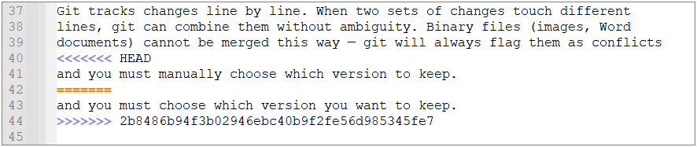
When a conflict occurs, git marks each affected section in the file:
<<<<<<< HEAD
This is my version of the line.
=======
This is the other person's version.
>>>>>>> branch-name- Everything between
<<<<<<< HEADand=======is your change. - Everything between
=======and>>>>>>>is the other change.
Resolving a conflict
- Open the file in an editor and find the conflict markers
(e.g. searching for
<<<<). - Decide which version to keep (or combine both).
- Delete the conflict markers
(
<<<<<<<,=======,>>>>>>>). - Save, commit, and push.
As stated above, in GitHub Desktop, conflicted files are highlighted and you can open them directly in your editor to resolve the conflict. Within IDEs like RStudio, the same markers appear and you can use the IDE’s built-in editors to resolve the conflict.
Note, solving a conflict is a manual editing process that requires human judgement. It is not part of the git operations.
Branching
To reduce unnecessary side-effects of concurrent work, git provides a powerful branching mechanism.
In short, branching allows each person (or feature) to have their own isolated copy of the project to work on.
Thus, your git workflow (edit > commit > push) is not interrupted by other people’s changes, and there is no need to pull and merge until you are ready to share your work with others.
General branches
Branching is a central concept in git and implemented from the very
beginning. So your repository already has a default
branch called main (or master in
older repositories). This branch typically represents the stable version
of the project that is ready for production use.
Why use branches?
Whenever you want to work on a new feature, fix an error, or experiment with an idea, you should create a new branch rather than to start editing straight away.
Using branches has a couple of advantages:
- If you do something wrong, you can simply delete the branch and
start over without affecting
main. - If you have to edit multiple files to implement your change, you are sure nobody interferes with your work until all your planned changes are implemented.
- You don’t have to finish your work in one go but can interrupt it at
any time and come back to it later without worrying about the state of
the
mainbranch. - Given the latter, you can also work on multiple features in parallel by creating multiple branches. Each branch can be dedicated to a specific feature, problem, or experiment.
- On GitHub, branches are the basis for pull requests, which provide a
structured way to review and discuss changes before merging them into
main. This is a huge advantage for team projects, as it allows for high quality standards and knowledge sharing!
Once your work on a branch is complete and ready to be shared, you
can merge it back into main (or any other branch) via a
pull request. Therein, the same auto-merging capabilities apply as
described above — if your branch’s changes do not conflict with
main, the merge will be automatic and seamless. If there
are conflicts, you will have to resolve them manually within your branch
as described in the previous section. We will look at pull requests in
more detail later in this section.
The branching structure is typically visualized as directed acyclic graph (DAG) where each node represents a commit. Commits that are on the same branch are connected by a line and branches are shown as diverging lines from a common ancestor commit. When a branch is merged into another, the DAG shows a merge commit that has two parent commits — one from the source branch and one from the target branch.
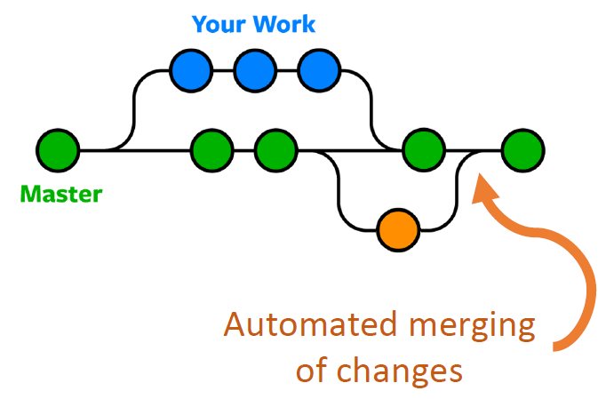
Creating a branch online in GitHub
When your work is GitHub-based, you can create branches directly on the GitHub website. This is useful for quick edits or when you are not working on the project locally. Note, the created branch exists first only on GitHub in the remote repository. You (or anybody) can later pull it to a local repository to work on it there.
- Go to your repository on GitHub.
- Click the Branch dropdown in the upper left.
- Select the
mainbranch (or the branch you want to branch off from).- typically, you will branch off from
main, but you can also branch off from another feature branch if your work depends on it.
- typically, you will branch off from
- Write a new branch name (e.g. “add-goals”“)
- Select “Create branch: add-goals from main” from the menu below the text field.
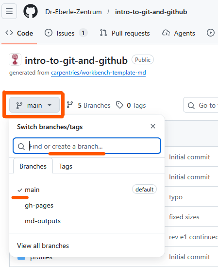
Creating a branch in GitHub Desktop
A similar workflow and interface is provided directly in GitHub
Desktop for your local repository. Thus, the created branch
exists first only on your local copy and you can work on it
without affecting the main branch until you are ready to
share it by pushing it to GitHub. Pushing will automatically create the
branch on GitHub in the remote repository if it doesn’t exist yet.
- Click the Current branch dropdown in the top toolbar.
- Click New branch.
- Enter a descriptive name (e.g.
add-goals). - Click Create branch.
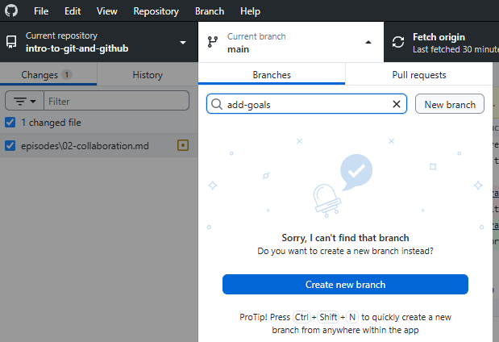
Switching branches
When working with multiple branches, you have to be careful to switch to the correct branch before you start editing.
Always check which branch you are on before you start working!
Within GitHub Desktop, the current branch is shown in the top toolbar. You can click it to see all available branches and switch between them.
The same applies to the GitHub website — the current branch is shown in the upper left and you can click it to switch branches - or any IDE with git integration (e.g. RStudio) — the current branch is usually shown in the status bar and you can switch branches via a dropdown menu.
Switching to another branch has several consequences on the working directory:
- The files in the working directory will be updated to reflect the
state of the branch you switched to. This means that if you switch from
maintoadd-goals, the files will change to show the version of the project as it exists on theadd-goalsbranch. Thus, some files might be added, removed, or modified depending on the differences between the branches. - If you have uncommitted changes in your working directory, git will try to keep them when switching branches. However, if the changes conflict with the target branch (e.g. you have modified a file that is also modified in the target branch), git will prevent you from switching and show a warning that says “Your changes would be lost by switching branches. Commit or stash your changes before switching branches.”
So when switching branches, ensure to update your editor view to reflect the new branch’s files and commit or stash any uncommitted changes to avoid losing work.
Pull Requests
A pull request (PR) is a proposal to merge changes
from one branch into another (typically into main). Pull
requests are created on GitHub and provide a space for:
- Code review: team members can read the changes line by line.
- Discussion: ask questions, suggest improvements, leave comments.
- Approval: reviewers approve or request changes before merging.
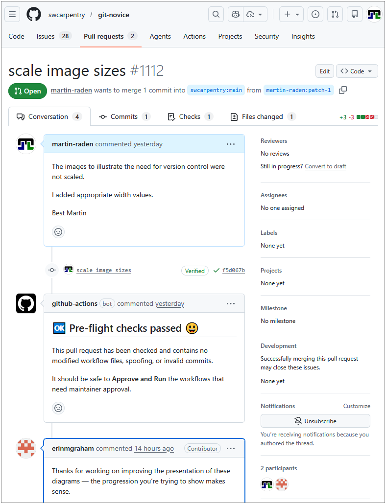
The screenshot from above shows the conversation tab of a pull request, where you can see the discussion and comments related to the PR. The Files changed tab shows the change visualization of the changes proposed in the PR, similar to the view discussed before. All commits that are part of the PR are shown in the Commits tab or within the time line of the conversation tab (here the “scale image sizes” commit is shown in the timeline). In the lower right, you see a list of all participants in the PR’s conversation, including the author and all reviewers. The upper right “reviewer” section allows to actively request a review from specific people, which is especially useful for larger teams. Labels and milestones can be used to organize and track PRs, especially in larger projects.
The comments within the conversation tab are written in Markdown, so you can use formatting, links, images, and even code snippets to make your comments more clear and informative.
Ensure you use a clear title (top line) and description (first text box) when creating a pull request, as this helps reviewers understand the purpose and context of your changes.
Note, all additional commits to the branch after creating the PR will automatically be added to the PR, so you can continue working on the branch and pushing changes (e.g. based on reviewer comments) until the PR is ready to be merged. There is no need to (re)create or update a PR after pushing additional commits to the branch. Only a message might be appropriate to inform reviewers about the implemented changes and the status of the PR.
In case your PR is not ready for review yet, you can also create a draft pull request that is not visible to reviewers and cannot be merged until you mark it as ready for review. To this end, use the “Convert to draft” button in the upper right of the PR page.
Opening a pull request online in GitHub
The GitHub website typically informs about recently pushed branches and provides a convenient Compare & pull request button to open a pull request directly from the code view.
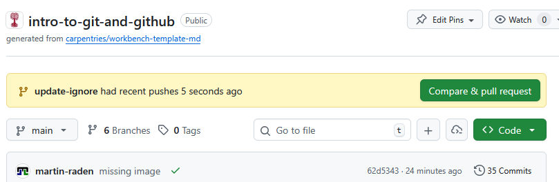
Alternatively, you can
- go to the Pull requests tab of your repository and click New pull request.
- use the Branches button in the Code tab to see all branches and open a PR from there.
- switch to the branch you want to open a PR for and click the Compare & pull request button.
Afterwards, you will be redirected to the PR form where you can fill in the title and description and submit the PR.
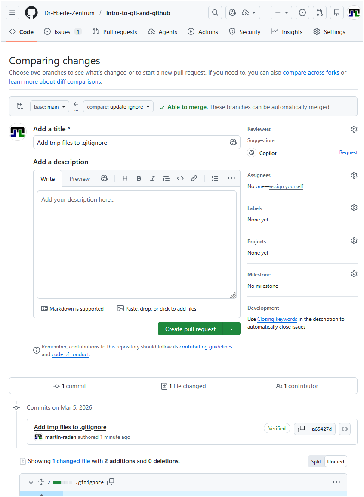
Therein, you have to define a title for your PR (e.g. “Add goals section”) and a description that explains the purpose and context of your changes. At the bottom all commits and changed files that are part of the branch and thus part of the PR are shown, so you can verify that the correct changes are included in the PR before submitting it. In the upper right, you can also select reviewers, add labels, etc.
The gray area above the title field shows the base branch (the branch
you want to merge into, typically main) and the compare
branch (the branch you want to merge from, typically your feature
branch) and whether the changes can be merged automatically or if there
are conflicts that need to be resolved before merging.
The Create pull request button finishes the process and submits the PR for review.
Opening a pull request via GitHub Desktop
When working locally and you are ready to share your work, you can open a pull request directly from GitHub Desktop.
- Push your branch’s changes to GitHub and ensure the remote repository is up-to-date.
- Use the Branch menu of GitHub Desktop and choose
Create Pull Request.
- This will redirect you to the GitHub website and prefill the PR form with the correct source and target branches.
- Fill in a title and description, then click Create pull request.

Reviewing and merging a pull request
- On the PR page, go to the Files changed tab to review the diff.
- Add comments or approve the changes.
- When ready, click Merge pull request and then Confirm merge.
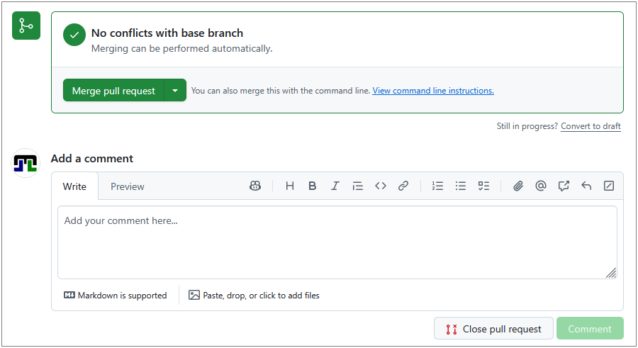
Note, git itself does not have the concept of pull requests — this is a GitHub feature built on top of git’s branching and merging capabilities.
Git itself only allows to merge branches, but it does not provide a review or discussion workflow before merging. Furthermore, merging is done directly on the current repository and does not automatically update any other (like the remote) repository until you push the changes.
Thus, a merged pull request on GitHub is not automatically transferring to your local repository until you pull the changes from GitHub.
Exercise: Branch vs Main
Explain the difference between:
- committing directly to
main, and - committing on a feature branch and creating a pull request.
When would you prefer one approach over the other?
- Committing to main is quick but risky — mistakes go live immediately and there is no review step.
-
Feature branch + PR adds a review step and keeps
mainstable. This is the recommended workflow for any collaborative project.
Use main directly only for small solo projects or trivial fixes (e.g. fixing a single typo).
- Git can auto-merge changes to different parts of a text-based file.
- A merge conflict occurs when the same lines are changed by two people.
- The
mainbranch typically represents the stable version of the project. - Branches let you work in parallel and independently without
affecting
main. - Pull requests provide a review and discussion workflow before merging branches.
Content from Problems, Safety, and GitHub Hygiene
Last updated on 2026-03-13 | Edit this page
Overview
Questions
- What common problems will I encounter when using git?
- How do I undo mistakes safely?
- How should I organise my repository and collaborate with others?
Objectives
- Handle common git pitfalls (empty directories, wrong commits)
- Undo changes using revert, discard, and reset (beginner-safe)
- Explain the difference between public and private repositories
- Describe protected branches, collaborators, and permissions
- Use GitHub issues effectively
Common Problems
In the following, we will discuss some common issues that beginners encounter when using git and GitHub, along with practical solutions.
Empty Directories
Git tracks files, not directories. If you create an empty folder, git will ignore it.
Workarounds:
Thus, if you really want to keep an empty directory in your repository, e.g. to indicate where data files should go, you can:
- Create a “hidden” placeholder file called
.gitkeepinside the directory.- Can be empty
- The name
.gitkeepis a convention (not a special git feature) to indicate that the file exists solely to keep the directory in version control. - Ensure to add and commit the
.gitkeepfile so that the directory is tracked.
- Make sure every directory contains at least one meaningful
file.
- For example, you could add a
README.mdinside the directory with instructions or descriptions. - This is often a better practice than using
.gitkeep, as it provides context for collaborators.
- For example, you could add a
Undoing Changes
It happens again and again that you make a change to a file and then realise that you made a mistake, or that you changed the wrong file. Or you accidentally commit a file that should not be tracked (e.g. a large data file or credentials).
In that case, you want to undo your work and restore the file to the last committed state that is clean or safe.
There are several ways to undo work in git. Here is a beginner-friendly compact overview to be discussed subsequently.
| Situation | Action in GitHub Desktop | What happens |
|---|---|---|
| Changed a file but have not committed | In “Changes” right-click the file → Discard changes | File returns to the last committed state |
| Committed but have not pushed | Right-click the commit → Undo Commit | The commit is removed from the local repository, changes are kept in the working directory |
| Already pushed | Use Revert Commit and push again | A new “revert”” commit is added that undoes the commit’s changes. |
Undo Uncommitted Changes
If you have changed a file wrongly but not used git so far, things are easy. You can simply either undo the changes (with any tool) or use the Discard changes option in the Changes view in GitHub Desktop. This will restore the file to the last committed state from your local repository, discarding all changes since then.
We are crossing fingers that you have not made any important changes to the file since the last commit, because they will be lost.
Undo Committed but Local Changes
If you committed a file or changes by mistake (for example a large data file or credentials or just nonsense changes), but have not yet pushed to GitHub, you can undo the commit and keep the changes in your working directory. This allows you to fix the mistake and then commit again.
- Don’t panic. The commit is only local until you push.
- In GitHub Desktop, right-click the commit in History and choose Undo
commit.
- This removes the commit but keeps the changes in your working directory, allowing you to fix the mistake.
- Add the file (pattern) to
.gitignoreso it is not tracked in the future.
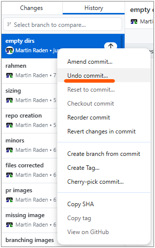
Note: This is only possible for commits that are not yet pushed to the remote repository (GitHub). Such “local” commits are indicated with a small “UP”-arrow icon in GitHub Desktop.
Credentials and secrets
Never commit passwords, API keys, or other secrets. If you accidentally push a secret to GitHub, consider it compromised — rotate/change the credential immediately and remove it from the repository history.
Undo Already Pushed Changes
If you have already pushed a commit to the remote repository
(e.g. GitHub) and want to undo it, you should not try to remove it from
history (e.g. with git reset --hard or
git rebase) because that can cause problems for
collaborators who have already pulled the commit. Instead you should
push a new commit that reverts the changes of the
previous commit. This way, the history remains intact and collaborators
can see that a change was made and then undone.
- In GitHub Desktop, right-click the respective commit in History view
- Choose Revert changes in commit.
- This creates a new commit that undoes the changes introduced by the original commit.
- Push the new revert commit to GitHub.
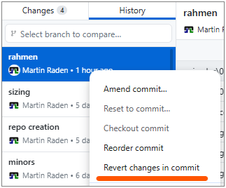
In case you need to undo multiple commits, you can revert them one by one starting from the most recent one. This way, you avoid merge conflicts that can arise when reverting multiple commits at once.
A note on rebase
You may encounter the term rebase in online tutorials. Rebasing rewrites commit history and is an advanced technique. Do not use rebase on shared branches unless you fully understand the implications — it can cause serious problems for collaborators. Stick with merge for now.
Repository Visibility
| Setting | Who can see the repo | Who can contribute |
|---|---|---|
| Public | Anyone on the internet | Only collaborators (unless forked) |
| Private | Only you and invited collaborators | Only collaborators |
Choose private for sensitive or unfinished work. Choose public when you want to share your project with the world.
The visibility setting is configured when you create a repository, but you can also change it later in the General repository settings on GitHub.
Protected Branches
Teams often protect the main branch so
that:
- No one can push directly to
main. - All changes must go through a pull request.
- Pull requests require at least one approving review before merging.
This prevents accidental breakage on the stable branch. Furthermore, it encourages code review and discussion before changes are integrated.
Reviewing can be bypassed by administrators for simple changes, but it’s good practice to follow the process even if you have admin rights.
Branch protection can be set up in the repository settings on GitHub (see below).
If you encounter an error when trying to push to main,
it’s likely that the branch is protected and you need to create a new
branch and open a pull request instead.
- Go to your repository on GitHub.
- Click Settings → Branches.
- Under “Branch protection rules”, click Add branch ruleset.
- Enter
mainas the branch name pattern. - Check Require a pull request before merging and other options as needed.
Collaborators and Permissions
To give someone access to your private repository (or push access to a public one):
- Go to Settings → Collaborators.
- Click Add people and search for their GitHub username.
- Choose a permission level (Read, Write, or Admin).
That way, they can clone the repository, push changes, and collaborate with you. Furthermore, you have full control over who can access your private repositories and what they can do.
GitHub Issues
Issues are used to track tasks, report bugs, and discuss ideas.
Good practices are:
- Clear title: summarise the problem or request in a few words.
- Description: explain the context, steps to reproduce (for bugs), and expected behaviour. You can also add screenshots or code snippets if relevant. It is also possible to reference lines of code or specific commits.
-
Labels: use labels like
bug,enhancement,questionto categorise. -
Linking: reference issues in commit messages or PRs
using
#123syntax.
Each issue gets a unique number (e.g. #1) and can be assigned to milestones, projects, or specific people. The latter is especially useful in team projects to indicate who is responsible for addressing the issue.
This number can be used to link the issue to commits and pull
requests, which helps to keep track of what work is being done to
resolve the issue. Thus, if your commit is solving a specific issue, you
can write Closes #1 in the commit message or PR
description, and GitHub will automatically close the issue when the
commit is merged. Furthermore, respective information about the linked
issue will be visible in the PR, which helps reviewers to understand the
context of the changes.
Documentation and README files
As already hinted at above, README.md README files are a
great way to provide documentation for your project. They are written in
Markdown and rendered as HTML on GitHub. Eventually, you may want to
create a README file within each directory to explain its purpose and
contents. This is especially helpful for collaborators who are new to
the project and may not be familiar with the structure. A
well-structured README can serve as a guide for navigating the
repository and understanding the overall project. It can also include
instructions and guidelines for respective directories, which can be
very helpful for onboarding new contributors and ensuring that everyone
is on the same page regarding the project’s structure and
organization.
Generally, a README.md file should
- Provide an overview of the project/directory and its purpose.
- Explain how to use the project or its components.
- Include any necessary setup instructions or dependencies.
- Be kept up to date as the project evolves.
The central README file in the root directory can also
- include links to other README files in subdirectories, creating a clear and navigable documentation structure for the entire project.
- provide documentation for dependencies, data sources, or other external resources that are relevant to the project.
- serve as a central hub for all project-related information, making it easier for collaborators to find what they need and understand the project’s structure and goals.
Typically, the project’s central README.md also serves
as the landing page when exporting the repository to GitHub Pages, so it
is a good place to provide an introduction and overview of the project
for visitors. This process will be discussed in more detail in the next
episode on publishing and automation.
General Recommendations
When working project-centered supported by git, it is good to keep some general ideas in mind.
Git from the Start
Start using git from the very beginning of your project, even if you are working alone. This way, you can track your changes, revert to previous versions if needed, and have a clear history of your work. It also makes it easier to collaborate with others later on, as you will already be familiar with the workflow and have a well-organised repository. The latter brings us the next point.
Organise Your Repository
Organise your repository in a clear and logical way from the start.
Use directories to separate different components of your project
(e.g. src for source code, data for datasets,
docs for documentation). This makes it easier to navigate
and understand the structure of your project, especially for
collaborators who may be new to it. Furthermore, it helps to keep your
work organised and manageable as the project grows in size and
complexity.
Here some ideas what to put under git-version control:
- image sources (e.g. InkScape or Gimp files, scripts for generating figures, …)
-
raw data files (e.g. CSV, Excel, …), best compressed as
.zipor.tar.gzto avoid large diffs - code (e.g. Python scripts, R scripts, Jupyter notebooks, …)
-
documentation (e.g.
README.md,docs/, …) - manuscript (e.g. LaTeX files, Word documents, …)
Things you should not put under git-version control (using
.gitignore):
- large data files (e.g. raw video, audio, large datasets, …) — use a data repository or storage service instead and link to it from your README
-
credentials (e.g. API keys, passwords, …) — use environment
variables or a secrets manager instead and add them to
.gitignoreso they are not tracked - build outputs (e.g. compiled code, generated figures, …) — these can be generated from the source files and do not need to be tracked
- temporary files (e.g. logs, caches, …) — these are not part of the project and can be ignored
Documentation
Most important is to keep your documentation up to date. Whenever you add a new directory, file, or component to your project, consider adding a README file to explain its purpose and contents. Update the central README file to reflect the overall structure and any new dependencies or instructions. This way, you ensure that your project remains understandable and navigable for yourself and others, even as it evolves over time.
Markdown and README.md files are really a fast an
efficient way to provide documentation for your project.
Synchronise Often
Make it a habit to commit and push your changes regularly. This way, you have a clear history of your work and can easily revert to previous versions if needed. It also makes it easier to collaborate with others, as they can see your changes and provide feedback in a timely manner. Regular commits also help to break down your work into manageable chunks, making it easier to track your progress and identify any issues that may arise.
Use Issues for Task Management
Use GitHub Issues to track tasks, bugs, and feature requests. Whenever something comes up that you need to address, create an issue with a clear title and description. This way, you can keep track of what needs to be done and prioritise your work effectively. Issues also facilitate collaboration, as others can comment on them, offer help, or take ownership of specific tasks.
Never Duplicate Again
Most important, never duplicate work again, as done in the comic in one of the last episodes. Once files are under (git) version control, never create “.._v1”, “.._final”, or “.._final_final” copies of files again. This is a common mistake that leads to confusion and a messy repository. Instead, use git to track changes and maintain a clear history of your work. If you need to experiment with changes, create a new branch and work there, then merge back when you are ready. This way, you can keep your repository clean and organised, and avoid the pitfalls of manual file duplication.
Exercise: Your Troubleshooting Checklist
Create a short checklist titled “What to do when something went wrong”. Include at least five items covering the scenarios discussed above.
- Unwanted changes to a file? → Discard changes in GitHub Desktop.
- Wrong commit (not yet pushed)? → Undo the commit in GitHub Desktop.
- Wrong commit (already pushed)? → Revert and push the revert commit.
- Committed a secret? → Rotate the credential immediately. Remove from history if possible.
-
Empty directory not showing up? → Add a
README.mdor.gitkeepfile. - Merge conflict? → Open the file, resolve the markers, commit, and push.
- Cannot push to main? → The branch is probably protected. Create a branch and open a pull request instead.
- Git does not track empty directories — use
.gitkeepas a placeholder. - Use Discard changes for uncommitted edits and Revert for commits.
- Never commit secrets; rotate any that are accidentally pushed.
- Protected branches enforce a pull request workflow.
- Issues help organise work; use clear titles, descriptions, and labels.
- README files provide essential documentation and should be kept up to date.
Content from Publishing and Automation
Last updated on 2026-03-12 | Edit this page
Overview
Questions
- How can I publish a website from my repository?
- What are tags and releases?
- How can I automate tasks with GitHub Actions?
Objectives
- Enable GitHub Pages to publish a simple site from a repository
- Create a tag and a release on GitHub
- Explain what GitHub Actions are and how workflows are triggered
- Describe how git and GitHub support FAIR and open-science principles
GitHub Pages
GitHub Pages turns a GitHub repository into a website — for free. It is commonly used for project documentation, personal portfolios, and course materials (like this one!).
The generated website is hosted on GitHub’s web servers and can be accessed via a URL like
-
https://USERNAME.github.io/REPO/, replacingUSERNAMEandREPOrespectively. - e.g. this course’ URL https://dr-eberle-zentrum.github.io/intro-to-git-and-github/.
Note, website and repository content are separately maintained but linked: you edit files in the repository, and GitHub Pages copies and renders them as a website.
The website does only contain the files that are covered by the Pages
configuration. For instance, per default only the README.md
is rendered as a web page, but other files (e.g. about.md)
are not included in the website until you link to them from the
README.md or create an index.html that
includes them. Alternatively, you can configure GitHub Pages to render
all files in a specific folder (e.g. /docs) and/or branch,
but this is not the default. The latter is useful when page generation
involves a build step as is the case for this course, which uses the Carpentries
Sandpaper workflow to generate the website from markdown files in
the repository.
An important note: GitHub Pages only supports static websites — meaning they cannot run server-side code (e.g. Python, PHP). Serving and including client-side JavaScript code from your repository is possible. This makes GitHub Pages ideal for simple project documentation, portfolios, and course materials, but not suitable for dynamic web applications.
But beware, GitHub (Pages) is not a long-term archive. While repositories can be part of GitHub’s archiving program, it is recommended to use a dedicated archive (e.g. Zenodo) for long-term preservation of research outputs. The same holds for websites published with GitHub Pages: they are not guaranteed to be preserved indefinitely, so consider using a web archiving service (e.g. Internet Archive) for important pages.
Enabling GitHub Pages
- Go to your repository on GitHub.
- Click Settings → Pages.
- Under Source, select the branch
(e.g.
main) and folder (/ (root)or/docs). - Click Save.
- After a short build, your site will be available at
https://USERNAME.github.io/REPO/.
Using GitHub Pages URL in Project Description
When using GitHub Pages to serve a well styled documentation or project website, it is typically a good idea to include the URL of the published site in the repository’s description. The easiest way is to use the About section on the right sidebar of the repository’s main page.
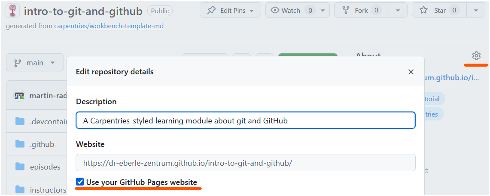
The dialog, shown above, allows you to add a short description of your project and a URL, or most easy, to use the GitHub Pages output URL.
Checking the build process
The build process for GitHub Pages can take a few minutes. If your site doesn’t appear or update immediately, wait a bit and refresh the page. You can also check the build status in the repository’s Actions tab, where you may find logs if there are issues with the build.
Alternatively, the build status is reported in the Deployments section of the repository’s main page’s right sidebar, where you can also find logs for troubleshooting.
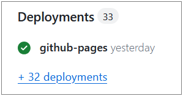
Minimal site from a README
The quickest way to get a Pages site is to write your content in
README.md. GitHub Pages will render it as HTML
automatically. For more control, you can use a static site generator
like Jekyll (GitHub’s default) or create your own HTML files.
GitHub Actions (Introduction)
GitHub Actions let you automate tasks that run
whenever something happens in your repository — for example, when you
push a commit or open a pull request. The introduced GitHub Pages
feature is an example of a GitHub Action that runs on every push to the
main branch to build and deploy the website. You can create
your own custom actions to automate tasks like running tests, checking
code style, or even deploying your project to a server.
What is a workflow?
A workflow is an automated process defined in a YAML
file inside the .github/workflows/ directory of your
repository. (If you have never heard about YAML yet, you might want to
check
out this YAML introduction) Each workflow contains one or more
jobs, and each job contains one or more
steps.
When does a workflow run?
Workflows are triggered by events, such as:
-
push— when commits are pushed to a branch (e.g. GitHub Pages deployment). -
pull_request— when a PR is opened or updated (e.g. to check spelling). -
schedule— on a cron schedule (e.g. nightly). -
workflow_dispatch— manually triggered from the Actions tab on GitHub.
Example: spell-checking with GitHub Actions
A simple spell-check workflow using cspell-action
can catch typos automatically. To this end, you would create a YAML
workflow file like .github/workflows/spellcheck.yml with
the following content:
YAML
# Workflow to enable spell-checking on pull requests to main
---
name: Spell Check
on: # any PRs on main branch
pull_request:
branches: [main]
jobs:
spellcheck: # run the action
runs-on: ubuntu-latest
steps:
- uses: actions/checkout@v5
with:
persist-credentials: false
- uses: streetsidesoftware/cspell-action@v8This workflow:
- Triggers on every pull request to the
mainbranch. - Checks out the repository code.
- Runs cspell to find spelling errors.
- Reports any issues directly in the pull request, making it easy to fix typos before merging.
To enable the workflow, you only have to commit and
push the workflow file to your repository. As soon as present, GitHub
will automatically run the workflow whenever a pull request is opened or
updated against the main branch, and report the results in
the PR’s checks section.
Whether or not a workflow passes or fails is visible in the pull request’s checks section or in the Actions tab of the repository.
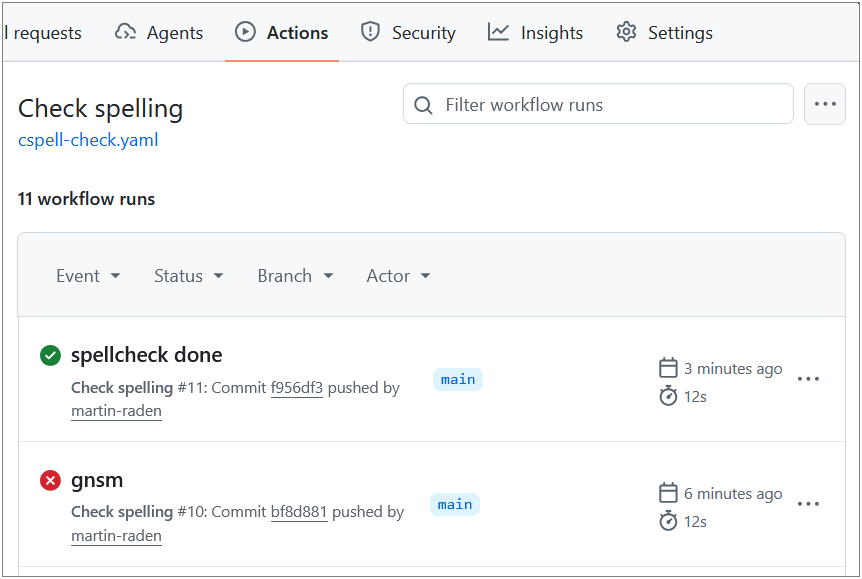
A passing workflow will show a green checkmark, while a failing workflow will show a red cross, along with logs to help you diagnose the issue.
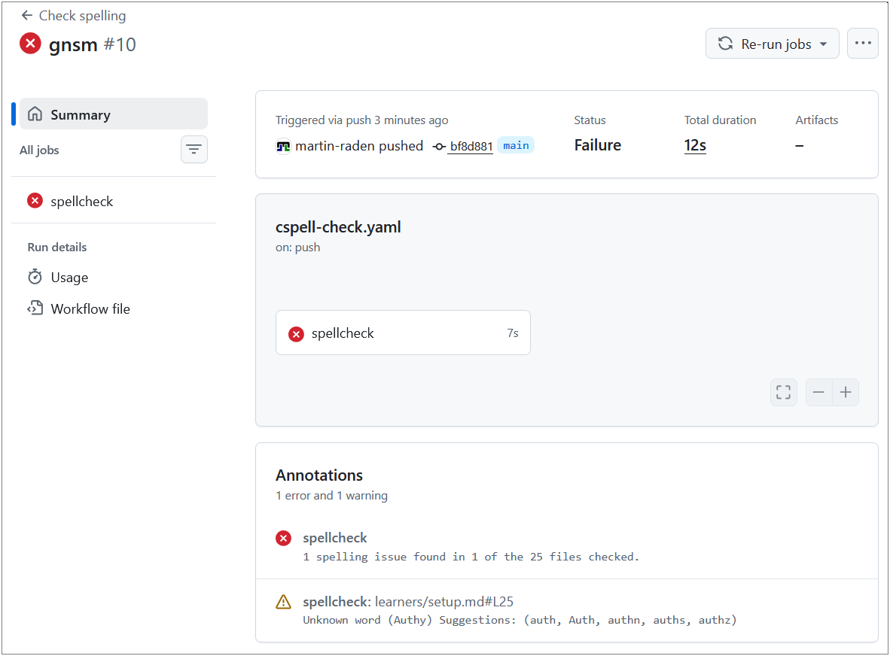
There is a wide variety of pre-built actions available in the GitHub Marketplace that you can use to automate different tasks, such as testing, linting, deployment, and more.
BASH
# Create the workflows directory
mkdir -p .github/workflows
# Create the workflow file
cat > .github/workflows/spellcheck.yml << 'EOF'
name: Spell Check
on:
pull_request:
branches: [main]
jobs:
spellcheck:
runs-on: ubuntu-latest
steps:
- uses: actions/checkout@v4
- uses: streetsidesoftware/cspell-action@v6
EOF
git add .github/workflows/spellcheck.yml
git commit -m "Add spell-check workflow"
git pushExercise: What Is a Workflow?
In your own words, explain:
- What is a GitHub Actions workflow?
- When does it run?
- Give one example of a useful workflow for your own project.
- A workflow is an automated process defined in a YAML file that tells GitHub what tasks to perform (e.g. run tests, check spelling).
- It runs when a specified event occurs — such as pushing code, opening a pull request, or on a schedule.
- Examples: run a spell checker on every PR, build a website on every
push to
main, run unit tests before merging.
Tags and Releases
Tags
Tagging is a central feature of git that allows you to mark important
points in your project’s history, such as releases or milestones.
Eventually, a tag is a label attached to a specific
commit, typically used to mark version numbers
(e.g. v1.0.0).
Releases
A release is a GitHub feature built on top of tags. It adds:
- Release notes describing what changed.
- Downloadable archives (
.zip,.tar.gz). - Optional binary attachments.
Creating a release on GitHub
- Go to your repository and click Releases (in the right sidebar).
- Click Draft a new release.
- Enter/Choose a tag (e.g.
v1.0.0) and a title. - Write release notes summarising the changes.
- Click Publish release.
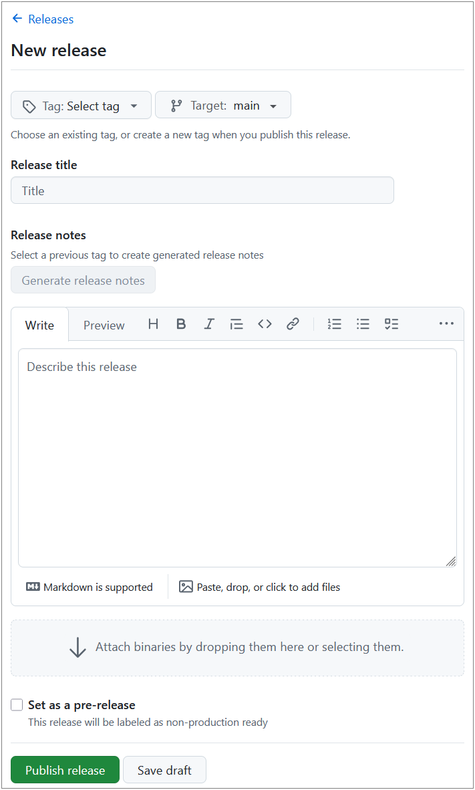
In contrast to tags, releases can be enriched with additional information and assets, making them more informative and user-friendly for end-users who want to understand the changes and download specific versions of the project.
A release typically provides a ZIP or tarball archive of the whole repository at the tagged commit, which can be downloaded by users without needing to clone the repository or use git commands. Furthermore, release information can be accessed via respective URLs making it easier to share specific versions of the project with others.
Zenodo Archiving and DOI
Zenodo is a research data repository that integrates with GitHub. By linking your repository to Zenodo, every release automatically gets a DOI (Digital Object Identifier) — making your work citable in academic publications and archived within Zenodo’s long-term preservation system.
Quick setup
- Go to zenodo.org and log in with your GitHub account.
- Enable the repository you want to archive.
- Create a release on GitHub — Zenodo will automatically archive it and assign a DOI.
GitHub for Science
Git and GitHub support several principles that are important in research:
| Principle | How GitHub helps |
|---|---|
| Reproducibility | Every version is tracked; collaborators can reproduce results from any point in time. |
| Transparency | Public repositories let anyone inspect the work. |
| Collaboration | Issues, pull requests, and reviews enable structured teamwork. |
| Archiving | Zenodo integration provides long-term preservation with DOIs. |
| FAIR data | Repositories can be Findable, Accessible, Interoperable, and Reusable when properly documented. |
Limitations
- GitHub is not a long-term archive by itself — use Zenodo or a discipline-specific repository for preservation.
- Large binary files (datasets, images) are not handled well by git. Consider Git LFS for large files.
- Private repositories limit transparency; consider making repos public when the work is published.
Alternatives to GitHub
| Platform | Notes |
|---|---|
| GitLab | Self-hosting possible, integrated CI/CD |
| Bitbucket | Atlassian ecosystem integration |
| Codeberg | Non-profit, community-driven |
| SourceHut | Minimalist, email-driven workflow |
All of these use git under the hood, so your skills transfer directly.
- GitHub Pages publishes a website directly from your repository.
- Tags mark specific commits; releases add notes and downloadable archives.
- Zenodo can archive GitHub releases and assign DOIs for academic citation.
- GitHub Actions automate tasks (testing, building, checking) triggered by repository events.
- A workflow is a YAML file in
.github/workflows/that defines automated jobs.